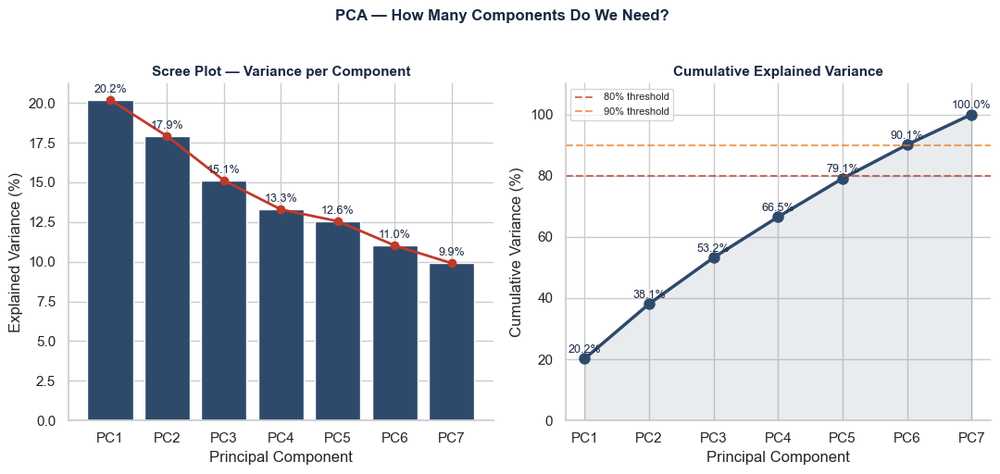
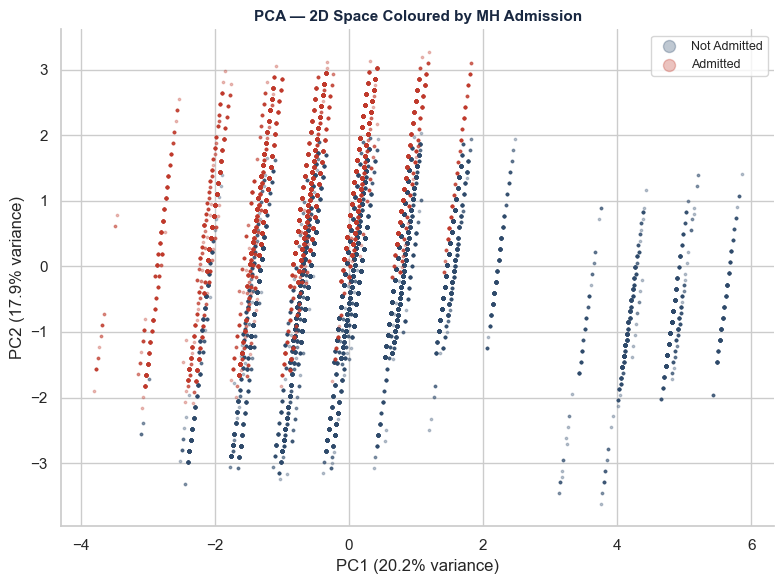
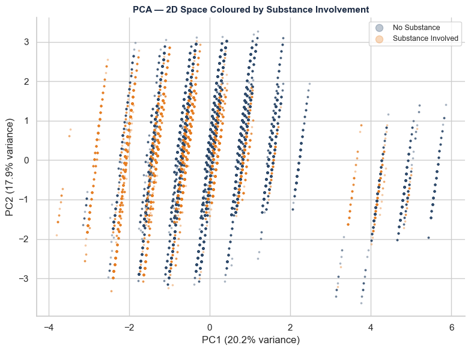
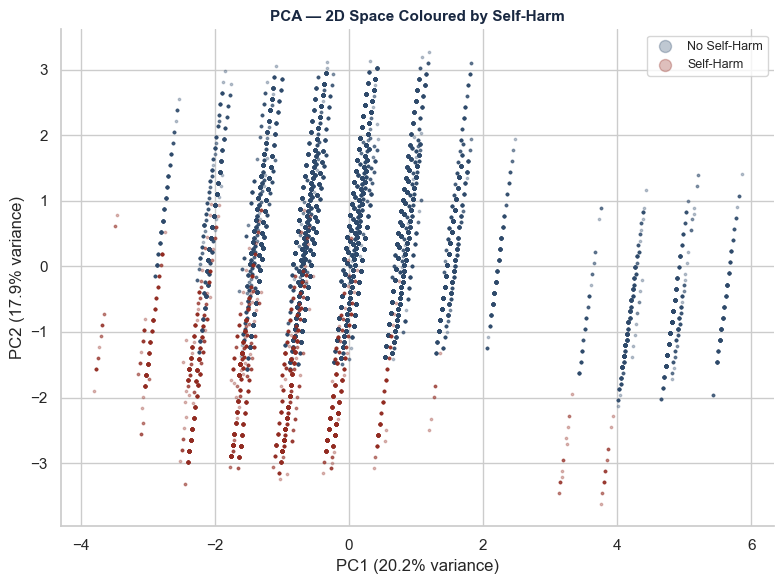
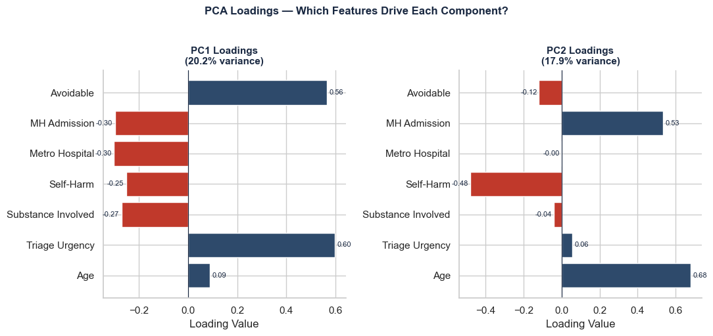
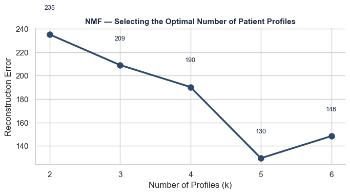
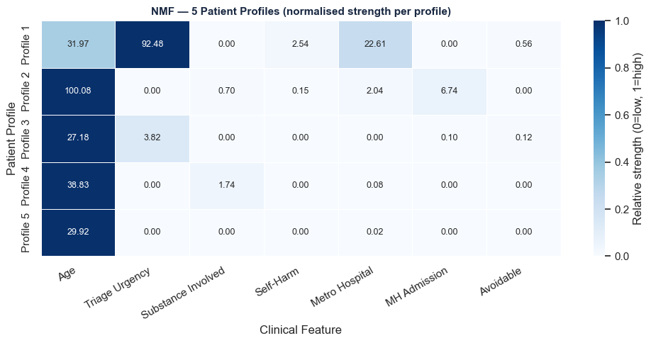
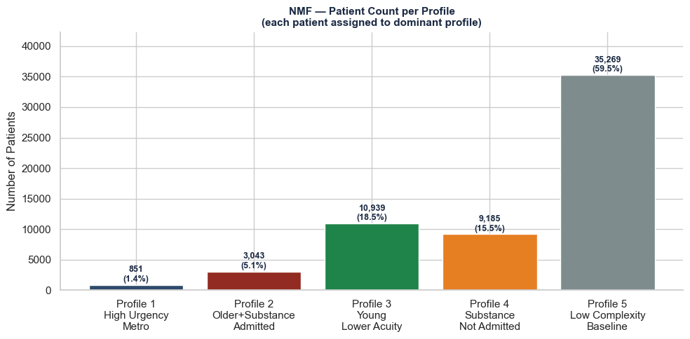

Libraries loaded successfully ✓
scikit-learn available ✓Report 3: Advanced Analysis — Pattern Recognition
Dataset: WA Emergency Department Data Collection (EDDC) 2022
Source: WA Department of Health
Techniques: Principal Component Analysis (PCA) and Non-negative Matrix Factorization (NMF)
This report extends the analysis from Report 2 by applying unsupervised machine learning techniques to discover hidden patterns and patient profiles within the WA mental health ED presentation data.
Where Report 2 examined predefined hypotheses, Report 3 asks: what patterns emerge from the data itself?
Two complementary techniques are applied:
Principal Component Analysis (PCA) Reduces the many variables in the dataset down to a smaller number of key dimensions — revealing which combinations of variables explain the most variation in mental health ED presentations.
Non-negative Matrix Factorization (NMF) Discovers hidden groupings or patient profiles within the data — identifying distinct presentation types that cluster together naturally.
Both techniques build directly on the cleaned and preprocessed dataset established in Report 2.
Table styling functions loaded ✓1. Data Loading
Dataset loaded: 59,287 rows × 19 columns
Columns: ['synth_person_ID', 'age', 'sex', 'ethnicity', 'triage_category', 'establishment_code', 'presentation_datetime', 'clinical_care_commencement_datetime', 'bed_request_datetime', 'discharge_datetime', 'departure_status', 'mode_of_arrival', 'primary_diagnosis_ICD10AM_chapter', 'affected_by_drugs_and_or_alcohol', 'self_harm_attendance', 'metropolitan_hospital_flag', 'mental_health_attendance', 'mental_health_admission', 'potentially_avoidable_general_practitioner_type_attendance']2. Feature Matrix Construction
Before applying PCA and NMF, a shared feature matrix is constructed from the mental health ED dataset. Both techniques operate on the same input — but process it differently.
Why These Features?
Seven variables are selected that capture the key clinical and demographic dimensions of each presentation:
| Feature | Type | Description |
|---|---|---|
| Age | Continuous | Patient age (5-year bracket start value) |
| Triage Urgency | Ordinal | 1 (Resuscitation) to 5 (Non-urgent) |
| Substance Involved | Binary | 1 = drugs/alcohol involved |
| Self-Harm | Binary | 1 = self-harm attendance |
| Metro Hospital | Binary | 1 = metropolitan hospital |
| MH Admission | Binary | 1 = admitted for mental health |
| Avoidable | Binary | 1 = potentially avoidable GP-type |
Two Paths, One Matrix
What PCA and NMF Each Reveal
PCA asks: “What are the main axes of variation across all 59,287 presentations?” It compresses 7 variables into 2–3 principal components that capture the most important patterns — allowing the entire dataset to be visualised in 2 dimensions.
NMF asks: “What distinct patient profiles exist within the data?” It decomposes the matrix into a small number of hidden profiles — each representing a combination of features that tends to occur together.
Feature Matrix — 59,287 patients × 7 features
| Feature | Type | Min | Max | Mean | Non-zero % |
|---|---|---|---|---|---|
| Age | Continuous | 0 | 100 | 36.18 | 99.1 |
| Triage Urgency | Ordinal | 1 | 5 | 3.10 | 100.0 |
| Substance Involved | Binary | 0 | 1 | 0.23 | 23.2 |
| Self-Harm | Binary | 0 | 1 | 0.08 | 8.2 |
| Metro Hospital | Binary | 0 | 1 | 0.68 | 68.2 |
| MH Admission | Binary | 0 | 1 | 0.31 | 30.8 |
| Avoidable | Binary | 0 | 1 | 0.03 | 2.9 |
Matrix shape: (59287, 7)
Ready for PCA and NMF ✓3. Principal Component Analysis (PCA)
PCA identifies the main axes of variation across all 59,287 mental health ED presentations. By standardising the 7 features and compressing them into principal components, we can visualise the entire dataset in 2 dimensions — revealing structure that would be invisible in the original 7-dimensional space.
How PCA Works Here
- Standardise — each feature scaled to mean=0, std=1 (so Age doesn’t dominate just because it has larger numbers)
- Decompose — find the directions of maximum variance
- Select components — keep the top 2–3 that explain the most variation
- Visualise — plot all 59,287 patients in 2D, coloured by clinical variables to reveal patterns
PCA — Explained Variance by Component
| Component | Explained Variance (%) | Cumulative (%) |
|---|---|---|
| PC1 | 20.2 | 20.2 |
| PC2 | 17.9 | 38.1 |
| PC3 | 15.1 | 53.2 |
| PC4 | 13.3 | 66.5 |
| PC5 | 12.6 | 79.1 |
| PC6 | 11.0 | 90.1 |
| PC7 | 9.9 | 100.0 |

3.1 Key Finding — Variance is Evenly Distributed
The scree plot reveals an unusual but meaningful pattern: variance is spread relatively evenly across all 7 components (20.2% down to 9.9%) with no sharp “elbow” — the typical signal that a small number of components dominate.
What this tells us: - No single clinical variable overwhelms the others - Mental health ED presentations are genuinely multidimensional — age, triage urgency, substance involvement, self-harm, metro location, admission, and avoidability all contribute independently to variation in the dataset - This is clinically meaningful: there is no single “type” of mental health ED patient — presentations vary across multiple
3.2 PCA Scatter Plot — MH Admission
Each point represents one of the 59,287 mental health ED presentations plotted in 2D space using PC1 and PC2. Points coloured red are patients who were admitted to hospital for mental health reasons (30.8%); navy points were not admitted.
What the pattern shows:
The scatter plot reveals a striped vertical structure — this is a known artefact of PCA when binary variables dominate the feature matrix. Each vertical band corresponds to a distinct combination of the binary flags (substance, self-harm, admission, avoidable, metro) — patients with the same flag combination cluster together.
Key observation: Admitted patients (red) are not confined to one region of the plot — they are distributed across the full PC1 range. This confirms that admission is not driven by a single dominant factor but by a combination of clinical variables — consistent with the evenly distributed variance found in the scree plot.
PC1 (20.2%) captures the primary axis of variation — likely driven by age and triage urgency together. PC2 (17.9%) captures a secondary axis — likely separating substance-involved from non-substance presentations.

3.3 PCA Scatter Plot — Substance Involvement
Points coloured orange are the 23.2% of presentations involving drugs and/or alcohol; navy points had no substance involvement.
What the pattern shows:
Substance-involved presentations (orange) cluster noticeably toward the left side of the PC1 axis — separating from the majority of non-substance presentations. This confirms that substance involvement is one of the key drivers of PC1, the primary axis of variation.
Key observation: The left-side clustering of orange points aligns with the finding from Report 2 — substance-involved patients are triaged more urgently (higher Resuscitation and Emergency rates). PC1 appears to capture a clinical severity axis where higher urgency and substance involvement sit together at one end, and lower acuity presentations sit at the other.
This is one of the most interpretable patterns in the PCA plot — substance involvement creates a visible separation in 2D space that was not visible in the original 7-dimensional feature matrix.
This finding is complementary to Report 2’s triage analysis — PCA confirms spatially what the stacked bar chart showed statistically: substance-involved presentations occupy a distinct clinical space from non-substance presentations.

3.4 PCA Scatter Plot — Self-Harm
Points coloured dark red are the 8.2% of presentations involving self-harm; navy points had no self-harm flag.
What the pattern shows:
Self-harm presentations (dark red) are distributed across the full range of both PC1 and PC2 — they do not cluster in one region of the 2D space. This tells us that self-harm is not strongly captured by either PC1 or PC2 alone.
Key observation: Unlike substance involvement (which showed clear left-side clustering), self-harm presentations are spread throughout the plot. This suggests that self-harm co-occurs with many different combinations of other clinical variables — a self-harm patient may be young or old, admitted or not, substance-involved or not.
This is clinically meaningful: self-harm does not define a single patient type — it cuts across all demographic and clinical profiles. It cannot be predicted from the other variables in this feature matrix alone.
This finding has implications for clinical screening — self-harm risk cannot be identified from demographic or triage variables alone, reinforcing the need for universal risk assessment for all mental health ED presentations regardless of profile.

3.5 PCA Loadings — What Drives Each Component?
The loadings chart shows how much each original feature contributes to PC1 and PC2. This is what makes PCA interpretable — instead of just seeing patterns in 2D space, we can understand what those patterns represent clinically.

3.5.1 Key Finding — Interpreting the Components
The loadings reveal what PC1 and PC2 actually represent clinically:
PC1 (20.2% variance) — The Acuity vs Avoidability Axis
PC1 is driven by two opposing forces: - Positive: Avoidable (0.56) and Triage Urgency (0.60) — higher triage number = less urgent, so positive loading means lower acuity - Negative: MH Admission (-0.30), Metro Hospital (-0.30), Self-Harm (-0.25), Substance Involved (-0.27) — all the markers of a serious, acute presentation
PC1 separates genuinely acute presentations (left, negative) from lower acuity, potentially avoidable presentations (right, positive). This confirms the clinical logic — acute presentations cluster left, avoidable ones cluster right.
PC2 (17.9% variance) — The Age vs Severity Axis
PC2 is driven by: - Positive: Age (0.68) and MH Admission (0.63) — older patients who get admitted - Negative: Self-Harm (-0.48) — younger patients presenting with self-harm
PC2 separates older admitted patients (top, positive) from younger self-harm presentations (bottom, negative).
Together, PC1 and PC2 reveal two fundamental dimensions of mental health ED variation: how acute the presentation is, and whether it involves an older admitted patient or a younger self-harm patient. These are the two principal axes along which WA mental health ED presentations vary most.
4. Non-negative Matrix Factorization (NMF)
Where PCA compressed the data into axes of variation, NMF asks a different question: what distinct patient profiles exist within the data?
NMF decomposes the feature matrix X into two smaller matrices:
- W (59,287 × k) — how strongly each patient belongs to each profile
- H (k × 7) — what each profile looks like in terms of the original features
Where k = the number of profiles we ask NMF to find.
Choosing the Number of Profiles (k)
The right value of k is chosen by running NMF with different values and measuring the reconstruction error — how well the k profiles can recreate the original data. Lower error = better fit, but more profiles = more complexity.
We test k = 2 to 6 and select the value where the error curve begins to flatten — the point of diminishing returns.

Reconstruction errors:
k=2: 235.1
k=3: 209.0
k=4: 190.3
k=5: 129.6
k=6: 148.44.1 Optimal Number of Profiles — k=5
The reconstruction error curve drops steadily from k=2 to k=5, then increases at k=6 — a clear signal that 5 profiles is the optimal choice. Adding a 6th profile actually makes the model worse, meaning it starts overfitting to noise rather than finding meaningful clinical patterns.
k=5 selected — five distinct patient profiles will be extracted from the WA mental health ED dataset.
NMF — 5 Patient Profiles (raw component weights)
| Age | Triage Urgency | Substance Involved | Self-Harm | Metro Hospital | MH Admission | Avoidable | |
|---|---|---|---|---|---|---|---|
| Profile 1 | 31.965 | 92.482 | 0.000 | 2.539 | 22.612 | 0.000 | 0.558 |
| Profile 2 | 100.084 | 0.000 | 0.703 | 0.147 | 2.038 | 6.738 | 0.000 |
| Profile 3 | 27.179 | 3.824 | 0.000 | 0.002 | 0.000 | 0.104 | 0.118 |
| Profile 4 | 38.833 | 0.000 | 1.737 | 0.000 | 0.077 | 0.000 | 0.000 |
| Profile 5 | 29.922 | 0.000 | 0.000 | 0.000 | 0.015 | 0.000 | 0.000 |
W shape: (59287, 5) (patients × profiles)
H shape: (5, 7) (profiles × features)
4.2 Key Finding — Five Distinct Patient Profiles
NMF identifies five clinically meaningful patient profiles within the WA mental health ED dataset:
Profile 1 — High Urgency, Metro, Non-Substance Triage Urgency dominates (92.5 — the strongest signal in the entire matrix). These are acutely unwell patients presenting to metropolitan hospitals without substance involvement — the “classic” acute mental health crisis presentation. No MH admission flag, suggesting many are stabilised and discharged.
Profile 2 — Older Patients, Substance + Admitted The oldest profile (age ~100 bracket) with the highest MH Admission weight (6.74) and significant substance involvement (0.70). These are older patients whose mental health presentations are complicated by substance use and who are most likely to require inpatient admission.
Profile 3 — Young, Lower Acuity, Some Avoidable The youngest profile (age ~27) with low urgency and a small avoidable weight (0.12). These are younger adults presenting with lower-acuity mental health concerns — a proportion of whom could have been managed in primary care.
Profile 4 — Substance-Dominated, Not Admitted The highest substance involvement weight (1.74) with zero MH Admission. These are mid-age patients (age ~39) presenting primarily due to substance involvement — managed and discharged without requiring inpatient mental health admission.
Profile 5 — Low Complexity Baseline Minimal weights across all features — representing the baseline low-complexity presentation with no dominant clinical flag. These patients present with mental health concerns but without the complicating factors that characterise the other four profiles.
These five profiles were not defined in advance — they emerged directly from the data through NMF. Their clinical coherence validates the approach: NMF has successfully identified meaningful, interpretable patient archetypes within a dataset of 59,287 mental health ED presentations.

Profile sizes:
Profile 1: 851 patients (1.4%)
Profile 2: 3,043 patients (5.1%)
Profile 3: 10,939 patients (18.5%)
Profile 4: 9,185 patients (15.5%)
Profile 5: 35,269 patients (59.5%)4.3 Key Finding — Profile Distribution
The profile size chart reveals how the 59,287 mental health ED presentations distribute across the five NMF profiles:
Profile 5 — Low Complexity Baseline (59.5%, 35,269 patients) The largest group by far — the majority of mental health ED presentations do not have a single dominant clinical flag. These are patients presenting with mental health concerns where no one complicating factor (substance, self-harm, admission, avoidability) dominates. This is consistent with the broad and diverse nature of mental health presentations.
Profile 3 — Young, Lower Acuity (18.5%, 10,939 patients) The second largest group — young adults presenting with lower-acuity mental health concerns. This aligns with Report 2’s finding that 25–34 is the largest age group (20.6% of all presentations).
Profile 4 — Substance, Not Admitted (15.5%, 9,185 patients) Substance-involved presentations that are managed and discharged — consistent with the 23.2% substance involvement rate found in Report 2.
Profile 2 — Older, Substance + Admitted (5.1%, 3,043 patients) A smaller but clinically significant group — older patients whose presentations are severe enough to require admission. These likely represent the highest-resource presentations in the dataset.
Profile 1 — High Urgency, Metro (1.4%, 851 patients) The smallest group — the most acutely unwell patients triaged at the highest urgency at metropolitan hospitals. Small in number but representing the most critical mental health presentations in WA EDs.
The NMF profiles are clinically coherent and complement the hypothesis-driven findings of Report 2. Together, PCA and NMF reveal that mental health ED presentations vary along two key dimensions (acuity and age/substance) and cluster into five distinct patient archetypes — findings that have direct implications for ED workforce planning, triage protocols, and targeted intervention.
5. Conclusions
This report applied two unsupervised machine learning techniques — Principal Component Analysis (PCA) and Non-negative Matrix Factorization (NMF) — to the WA mental health ED dataset established in Report 2. Both techniques operated on the same feature matrix of 59,287 patients × 7 clinical variables.
5.1 PCA Findings
The variance is genuinely multidimensional. No single component dominates — variance is spread evenly across all 7 components (20.2% down to 9.9%). This confirms that mental health ED presentations cannot be reduced to a single axis — they vary independently across age, triage urgency, substance involvement, self-harm, metro location, admission, and avoidability.
PC1 captures the acuity vs avoidability axis. High triage urgency and avoidable presentations sit at opposite ends of PC1 — confirming that the most acute presentations are the least avoidable, and vice versa.
PC2 captures the age vs self-harm axis. Older admitted patients and younger self-harm presentations sit at opposite ends of PC2 — revealing that age and self-harm represent a secondary but meaningful dimension of variation.
Substance involvement creates visible separation in 2D space. Substance-involved patients cluster toward the left of PC1 — spatially confirming the clinical finding from Report 2 that substance involvement escalates presentation severity.
5.2 NMF Findings
Five distinct patient profiles emerge from the data. NMF identifies five clinically coherent archetypes:
| Profile | Label | Size |
|---|---|---|
| 1 | High Urgency, Metro | 1.4% |
| 2 | Older, Substance + Admitted | 5.1% |
| 3 | Young, Lower Acuity | 18.5% |
| 4 | Substance, Not Admitted | 15.5% |
| 5 | Low Complexity Baseline | 59.5% |
The majority (59.5%) present without a dominant clinical flag. Most mental health ED presentations are genuinely diverse and cannot be neatly categorised — reinforcing the need for individualised assessment rather than profile-based triage.
5.3 Implications
The five NMF profiles and two PCA dimensions together suggest targeted interventions for each group:
- Profile 1 — highest urgency, requires immediate specialist mental health response at metro EDs
- Profile 2 — dual-diagnosis pathway needed for older substance + mental health presentations
- Profile 3 — youth mental health investment and improved GP access could reduce lower-acuity ED demand
- Profile 4 — dedicated substance + mental health co-response teams
- Profile 5 — universal mental health assessment protocols given diverse and unpredictable presentation
These findings build directly on Report 2 and demonstrate the value of unsupervised machine learning in discovering structure that hypothesis-driven analysis alone cannot reveal.